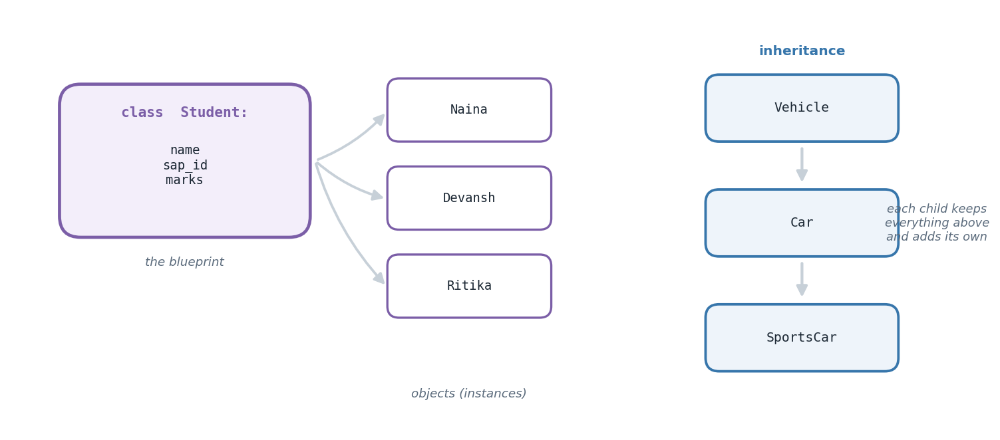

The big idea
Consider storing a student. You could use three parallel lists — names, IDs, marks — and trust that index 4 means the same person in all three. It works, and it is fragile: sort one list and the whole structure silently corrupts.
Object-oriented programming offers a better model. A class is a blueprint describing what a
kind of thing has (its data, called attributes) and what it can do (its behaviour, called methods).
An object is one concrete thing built from that blueprint. Student is the class; Naina, Devansh
and Ritika are objects. Each carries its own data, and each carries its behaviour with it — the
percentage calculation lives on the student rather than floating loose in the program.
Three further ideas make this powerful.
Inheritance lets a class build on another. A SportsCar inherits everything Car can do, which
inherits from Vehicle — write shared behaviour once, specialise where it differs. Overriding
lets a child replace a parent's method with its own version, so Circle.area() computes properly while
still being callable as just .area() on any shape. And operator overloading teaches your own
classes to work with Python's built-in operators, so v1 + v2 on two vectors does the sensible thing
via the special method __add__.
That last idea explains something you have been using all along: + on numbers, strings and lists all
behave differently because each type defines its own __add__. You are not learning a new mechanism —
you are learning how the mechanism you have used since chapter one actually works.

How it works
Anatomy of a class
class Student:
def __init__(self, name, marks): # the constructor
self.name = name # attribute stored on THIS object
self.marks = marks
def percentage(self): # a method
return sum(self.marks.values()) / len(self.marks)
__init__ runs automatically whenever you create an object and sets up its starting state.
self is the object the method was called on — it is passed automatically, which is why
naina.percentage() needs no arguments despite the definition listing one.
The three inheritance shapes
| Shape | Structure | Example |
|---|---|---|
| Single | one parent | Manager(Employee) |
| Multilevel | a chain | Vehicle → Car → SportsCar |
| Multiple | two parents at once | Triathlete(Swimmer, Runner) |
With multiple inheritance Python resolves name clashes using the MRO (method resolution order) — left to right through the parent list.
Dunder methods
Methods named with double underscores hook into Python's built-in behaviour:
| Method | Triggered by |
|---|---|
__init__ |
creating the object |
__str__ |
print(obj) |
__repr__ |
inspecting the object |
__add__ |
obj1 + obj2 |
__len__ |
len(obj) |
__eq__ |
obj1 == obj2 |
Defining __repr__ is a small habit with a large payoff — it turns useless debug output like
<Vector2D object at 0x7f8b> into Vector2D(x=14, y=9).
The tasks
Everything above was theory. What follows is the lab work — each task stated, explained, then solved with code that really ran.
Task 1
Task 1 — A Minimal Student Class
Three objects from one blueprint, each displaying its own details.
class Student: def __init__(self, full_name, reg_id, scores): self.full_name = full_name self.reg_id = reg_id self.scores = scores def display(self): print(f"Name: {self.full_name}, Reg ID: {self.reg_id}, Marks: {self.scores}") learners = [ Student("Naina", "6001", {"phy": 82, "chem": 74, "maths": 90}), Student("Devansh", "6002", {"phy": 65, "chem": 71, "maths": 58}), Student("Ritika", "6003", {"phy": 93, "chem": 88, "maths": 95}), ] for learner in learners: learner.display()
Name: Naina, Reg ID: 6001, Marks: {'phy': 82, 'chem': 74, 'maths': 90}
Name: Devansh, Reg ID: 6002, Marks: {'phy': 65, 'chem': 71, 'maths': 58}
Name: Ritika, Reg ID: 6003, Marks: {'phy': 93, 'chem': 88, 'maths': 95}
Task 2
Task 2 — Adding Percentage and Pass/Fail Logic
Two methods on top of the constructor: marks_percentage() and result()
(pass requires every subject above 40). A standalone function then computes
the class-wide average percentage across all records.
class StudentRecord: def __init__(self, full_name, reg_id, scores): self.full_name = full_name self.reg_id = reg_id self.scores = scores def display(self): print(f"Name: {self.full_name} | Reg ID: {self.reg_id} | Marks: {self.scores}") def marks_percentage(self): return sum(self.scores.values()) / len(self.scores) def result(self): return "Pass" if all(m > 40 for m in self.scores.values()) else "Fail" def cohort_average(records): return sum(r.marks_percentage() for r in records) / len(records) raw_records = [ ("Naina", "6001", {"phy": 82, "chem": 74, "maths": 90}), ("Devansh", "6002", {"phy": 65, "chem": 71, "maths": 58}), ("Ritika", "6003", {"phy": 33, "chem": 88, "maths": 95}), ] all_records = [StudentRecord(*r) for r in raw_records] for rec in all_records: rec.display() print("Percentage:", f"{rec.marks_percentage():.2f}%") print("Result:", rec.result()) print("-" * 40) print("Cohort average percentage:", f"{cohort_average(all_records):.2f}%")
Name: Naina | Reg ID: 6001 | Marks: {'phy': 82, 'chem': 74, 'maths': 90}
Percentage: 82.00%
Result: Pass
----------------------------------------
Name: Devansh | Reg ID: 6002 | Marks: {'phy': 65, 'chem': 71, 'maths': 58}
Percentage: 64.67%
Result: Pass
----------------------------------------
Name: Ritika | Reg ID: 6003 | Marks: {'phy': 33, 'chem': 88, 'maths': 95}
Percentage: 72.00%
Result: Fail
----------------------------------------
Cohort average percentage: 72.89%
Task 3
Task 3 — Single, Multilevel, and Multiple Inheritance
Three separate class hierarchies, each demonstrating one style of inheritance, exercised at the bottom.
# Single inheritance class Employee: def introduce(self): print("I work here.") class Manager(Employee): def lead_team(self): print("I lead a small team.") # Multilevel inheritance class Vehicle: def start_engine(self): print("Engine started.") class Car(Vehicle): def drive(self): print("Driving on the road.") class SportsCar(Car): def turbo_boost(self): print("Turbo engaged!") # Multiple inheritance class Swimmer: def swim(self): print("Swimming laps.") class Runner: def run(self): print("Running a mile.") class Triathlete(Swimmer, Runner): pass print("Single Inheritance:") mgr = Manager() mgr.introduce() mgr.lead_team() print("\nMultilevel Inheritance:") sc = SportsCar() sc.start_engine() sc.drive() sc.turbo_boost() print("\nMultiple Inheritance:") athlete = Triathlete() athlete.swim() athlete.run()
Single Inheritance: I work here. I lead a small team. Multilevel Inheritance: Engine started. Driving on the road. Turbo engaged! Multiple Inheritance: Swimming laps. Running a mile.
Task 4
Task 4 — Method Overriding
A child class replaces the parent's implementation while keeping the same method name.
class Shape: def describe(self): print("This is some kind of shape.") def area(self): return 0 class Circle(Shape): def __init__(self, radius): self.radius = radius def describe(self): print("This is a circle.") def area(self): return 3.14159 * self.radius ** 2 generic = Shape() disc = Circle(6) generic.describe() print("Generic area:", generic.area()) disc.describe() print("Circle area:", round(disc.area(), 2))
This is some kind of shape. Generic area: 0 This is a circle. Circle area: 113.1
Task 5
Task 5 — Operator Overloading with a Vector Class
Overloading __add__ lets + combine two Vector2D objects component-wise,
just like the requested Point example (renamed here to Vector2D to keep
the demo distinct).
class Vector2D: def __init__(self, x, y): self.x = x self.y = y def __add__(self, other): if not isinstance(other, Vector2D): return NotImplemented return Vector2D(self.x + other.x, self.y + other.y) def __repr__(self): return f"Vector2D(x={self.x}, y={self.y})" v1 = Vector2D(14, 9) v2 = Vector2D(6, 23) v3 = v1 + v2 print("v1:", v1) print("v2:", v2) print("v1 + v2:", v3)
v1: Vector2D(x=14, y=9) v2: Vector2D(x=6, y=23) v1 + v2: Vector2D(x=20, y=32)
Common pitfalls
selfEvery method's first parameter is self, and every attribute needs the self. prefix inside the class.__init__ are shared by all instances. Per-object data belongs in __init__.Student is the blueprint; Student(...) builds one. Calling methods on the class itself fails.